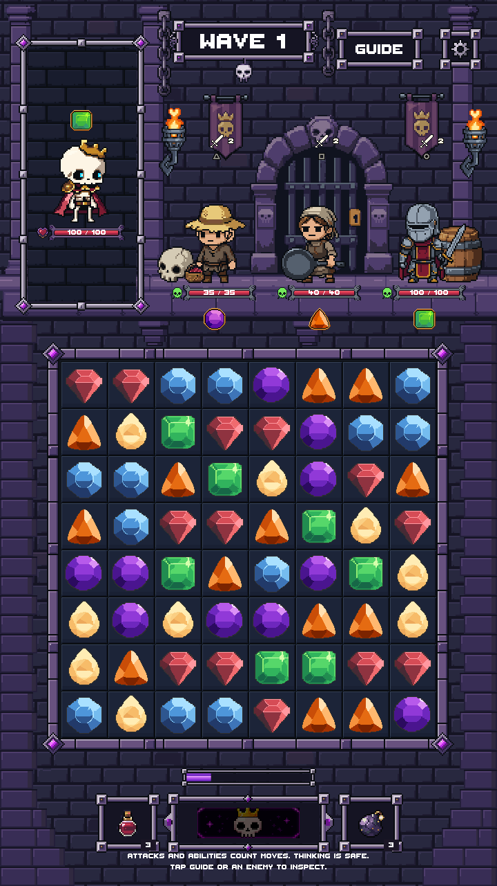

Both corner sprites are selected in the production art resource. These captures use runtime scenery, with no editor-only decorations. Artwork and layout match the approved review.
Verification report | PR #205
